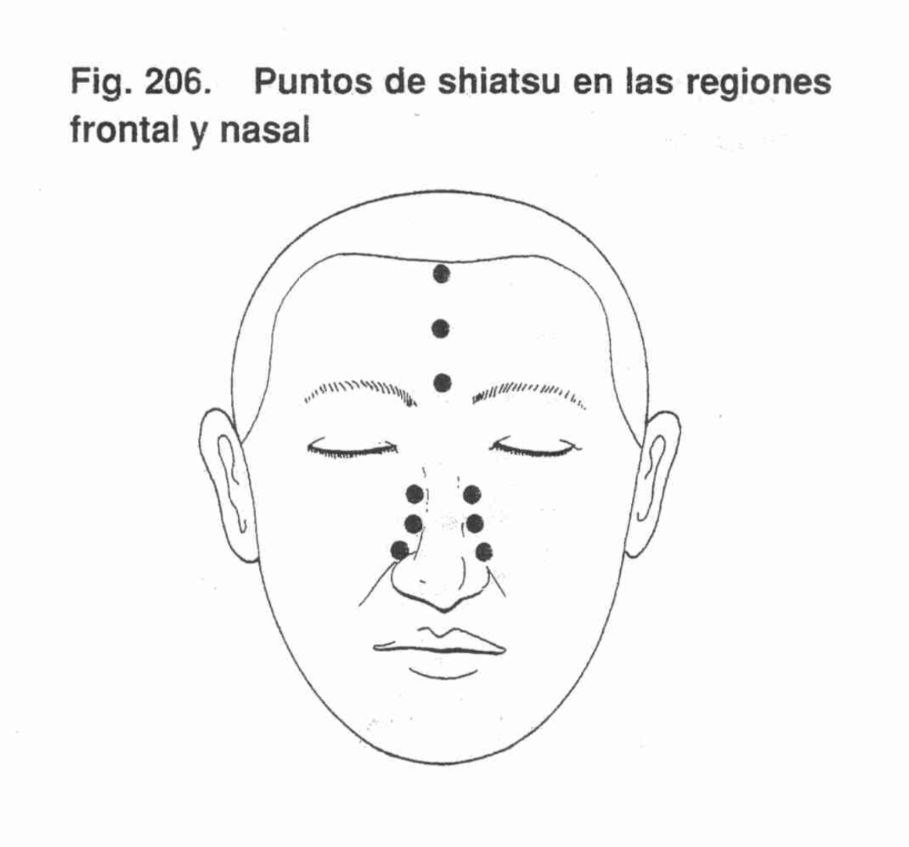
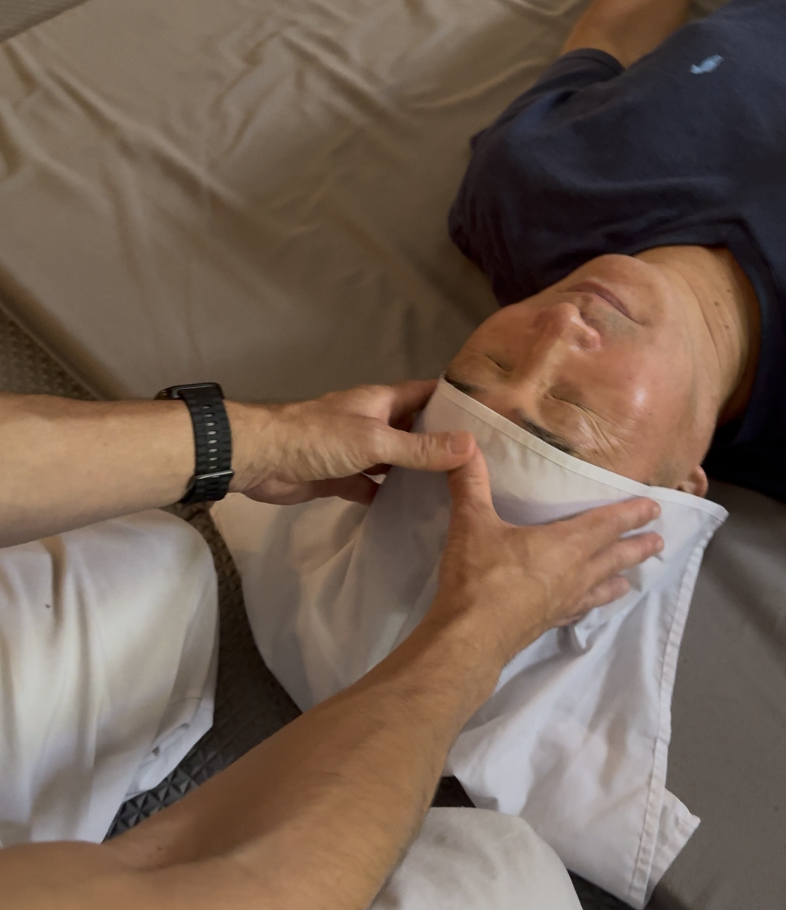
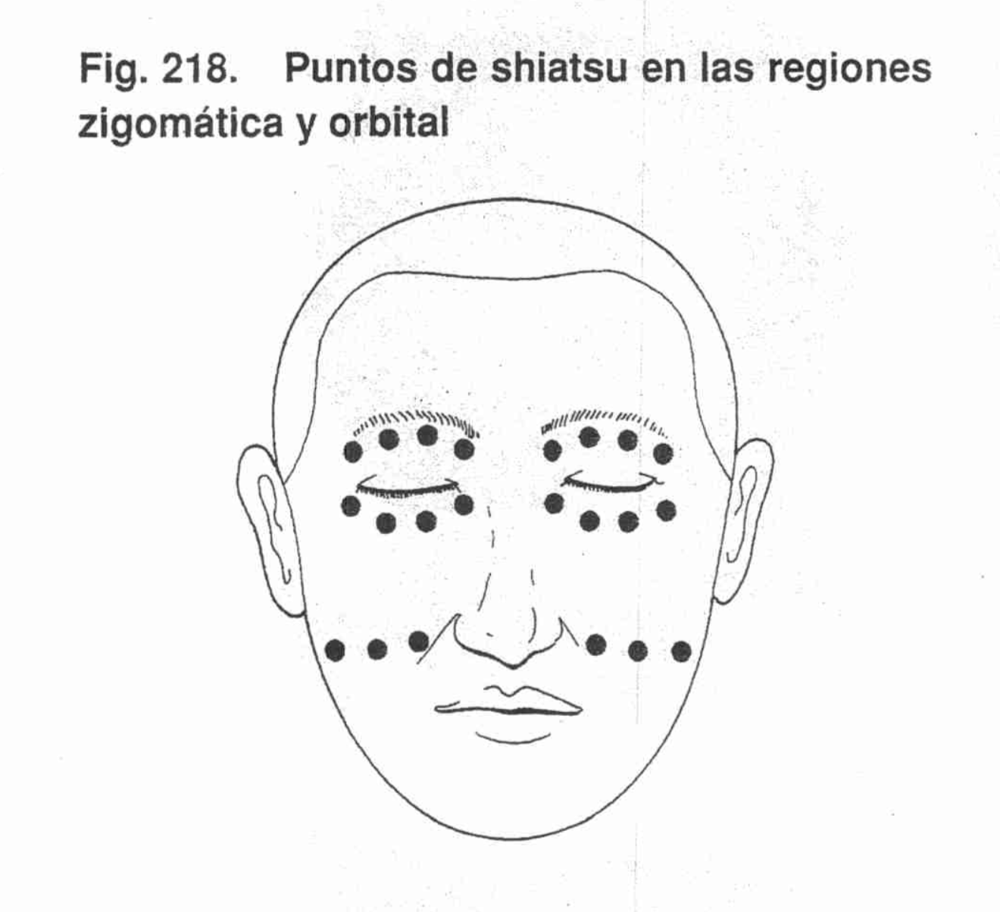
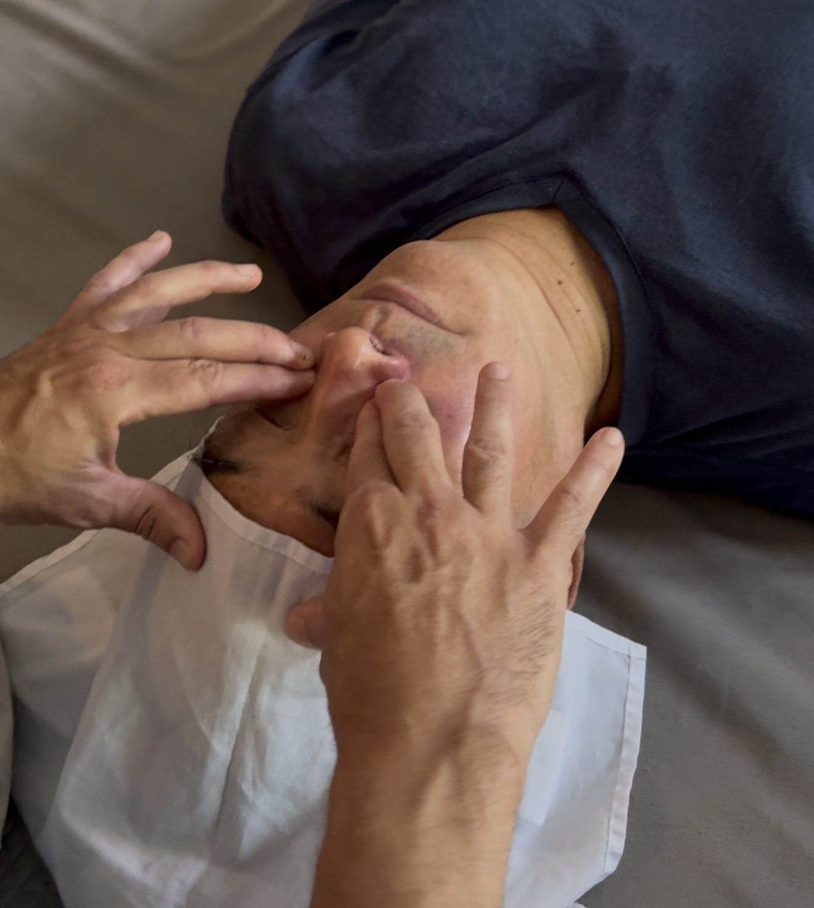
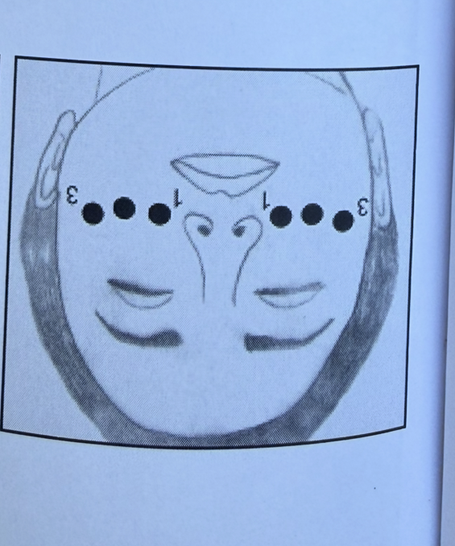
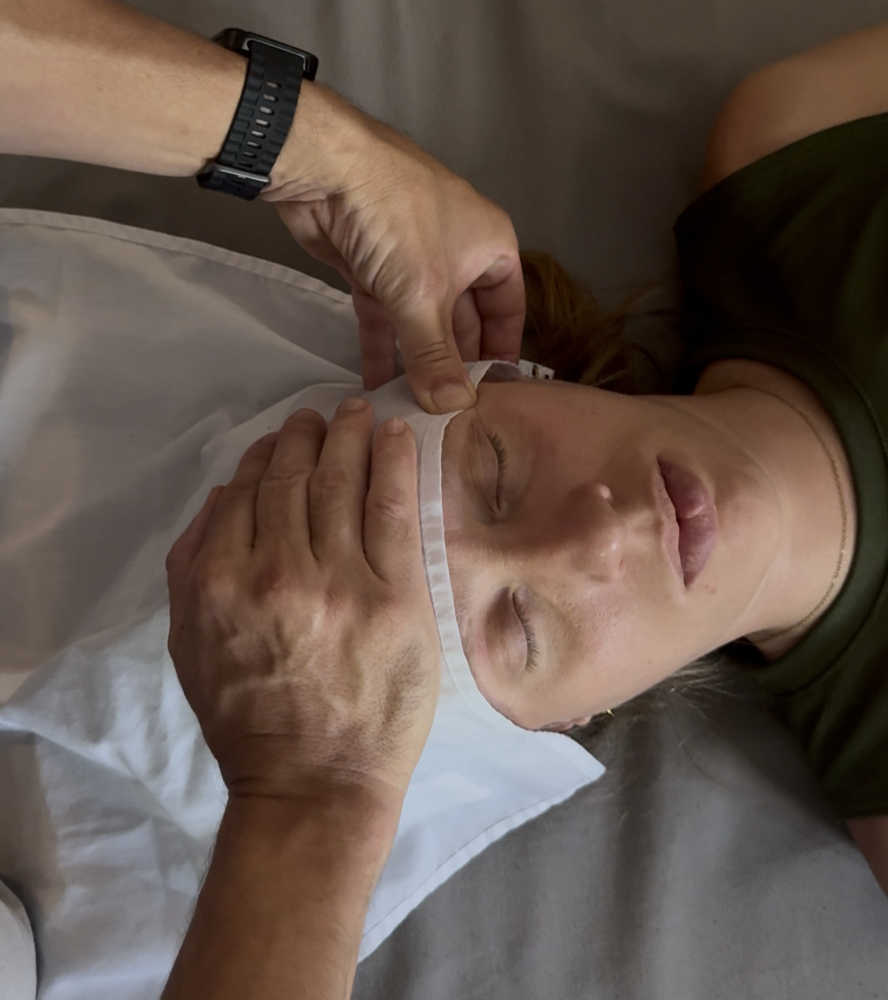
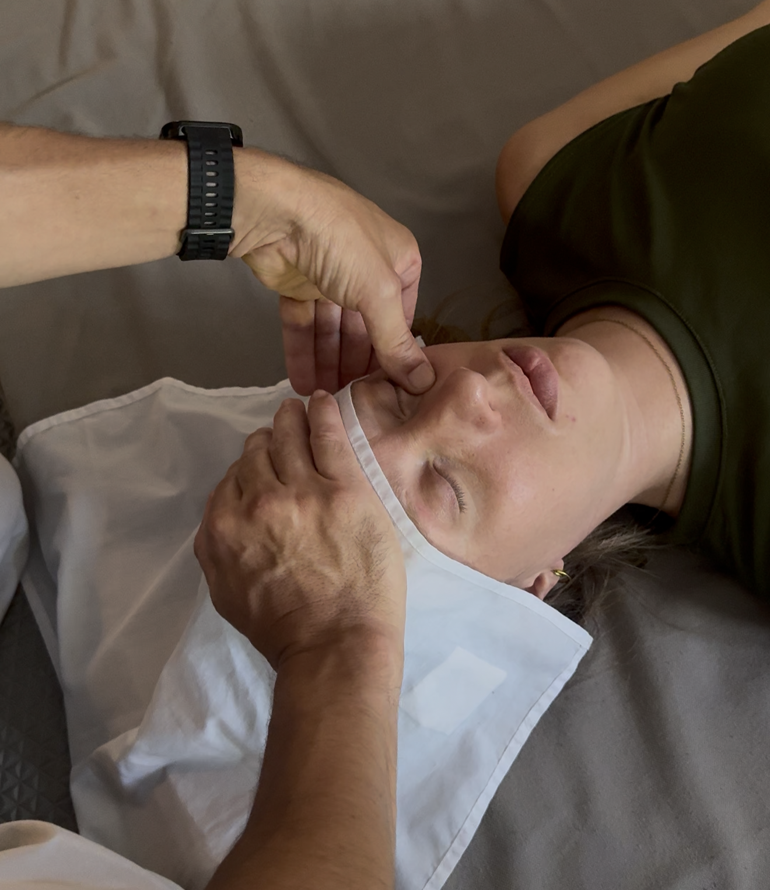
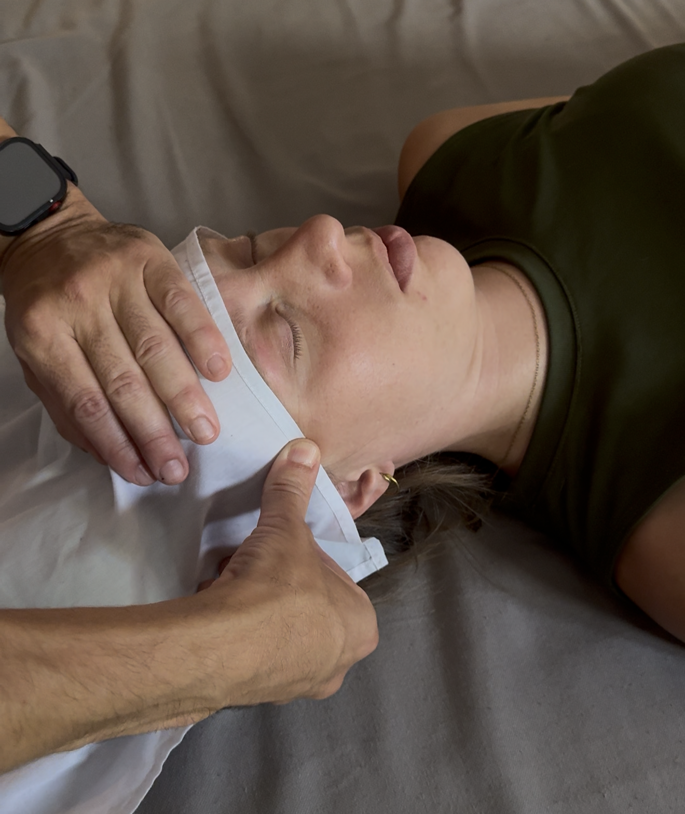
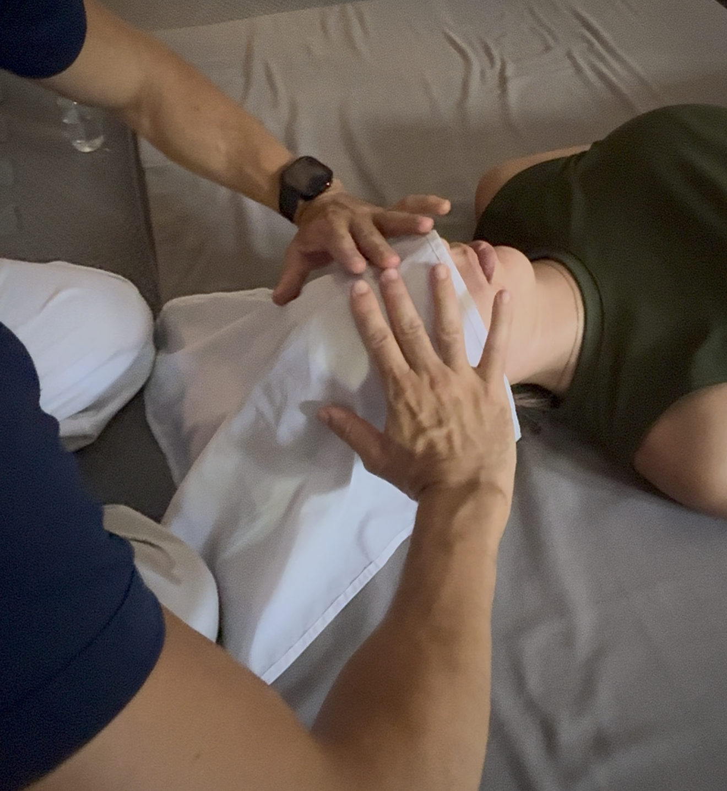

Shiatsu Namikoshi
Guía de Aplicación: Región Rostro
PROCEDIMIENTO 1: Región Frontal
Postura Terapeuta: De rodillas, frente a la región.
Tipo de Presión: Pulgar sobre pulgar.
Número de Puntos: 3 puntos.
Dirección: Entrecejo hacia el nacimiento del cabello.
Frecuencia: 3 veces, 3 segundos.


PROCEDIMIENTO 2: Región Nasal
Postura Terapeuta: Seiza, frente a la región.
Tipo de Presión: Dedo medio sobre índice.
Número de Puntos: 3 puntos.
Dirección: Raíz de la nariz hacia el labio superior.
Frecuencia: 1 vez, 3 segundos.


PROCEDIMIENTO 3: Región Zigomática
Tipo de Presión: Dedos índice, medio y anular (ambas manos).
Número de Puntos: 3 a cada lado.
Técnica: Ligera tracción hacia el terapeuta.
Frecuencia: 1 vez, 3 segundos (simultáneo).


PROCEDIMIENTO 4: Región Orbital y Sien
Tipo de Presión: Un solo pulgar (mano opuesta en frente).
Número de Puntos: Orbital 4, Sien 3.
Dirección: Ángulo interno hacia externo.
Frecuencia: 1 vez, 3 segundos por lado.


PROCEDIMIENTO 5: Globos Oculares
Tipo de Presión: Palmar (puntas de los dedos al centro).
Técnica: Ligera presión simultánea.
Frecuencia: 1 vez, 10 segundos.

